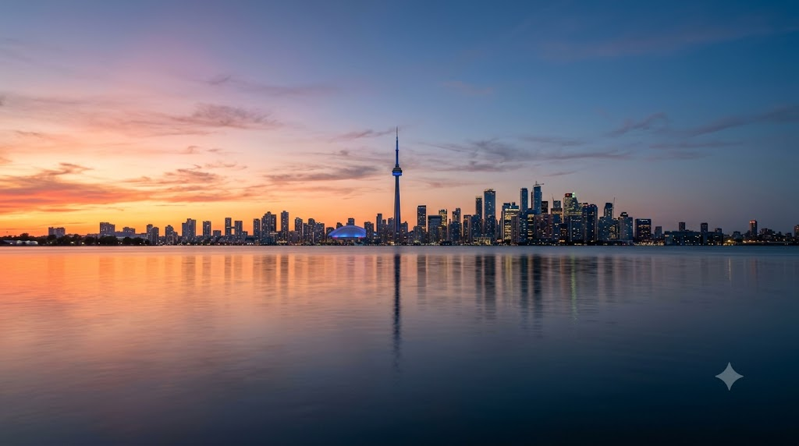

About Harbour Link
Dedicated to safeguarding Toronto's iconic lake passage, preserving cherished maritime history, and transitioning to a modern, zero-emission green fleet.
A Living Maritime Legacy
Before 1858, the Toronto Islands were actually a sandy peninsula connected directly to the mainland. A fierce April storm severed the peninsula, creating the Eastern Gap and permanently turning the island into an archipelago that could only be reached by boat.
From the earliest horse-powered boats to majestic steam-powered side-wheel paddleboats in the Victorian era, the ferry has remained Toronto's most beloved communal voyage. Harbour Link proudly continues this tradition, transporting over 1.4 million passengers annually.
Meet Our Historic & Modern Vessels
Each vessel in our fleet tells an indelible chapter of Toronto's waterfront identity.
 Built 1910
Built 1910
P.S. Trillium
The grand dame of the Great Lakes. A rare, operational side-wheel steam paddlewheeler capable of carrying 800 passengers with majestic open decks.
 Built 1935
Built 1935
M.V. William Inglis
Known for her elegant classic lines and wooden benches, the Inglis has reliably completed hundreds of thousands of crossings to Hanlan's Point.

Built 1939M.V. Sam McBride
Named after former Toronto Mayor Sam McBride. A true workhorse accommodating up to 1,000 visitors per crossing during warm summer weekends.
Our 100% Electric Zero-Emission Fleet Roadmap
Harbour Link is actively pioneering full electric propulsion repowering across our fleet. Two brand-new fully electric, high-capacity double-ended vessels are under construction to enter service with zero underwater acoustics disturbance and zero direct greenhouse emissions.
Maritime Safety Certifications
Every Harbour Link ferry undergoes rigorous annual inspection by Transport Canada marine surveyors. Our captains and engineers hold advanced Master Mariner credentials with specialized high-traffic commercial harbour endorsements.